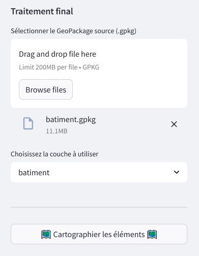

Principe de base
1. Pr√©requis avant l'utilisation de l'application¶
Disposer du chemin vers un dossier photo et conna√Ætre le FOV de l'image¶
Les photos doivent contenir des données EXIF exploitables et précises pour garantir un rendu fiable (précision minimum conseillée : < 1 m pour les coordonnées + direction).
Il est nécessaire de connaître la valeur du FOV (champ de vision) de l’appareil photo. Cette valeur est à renseigner dans la barre latérale de l’interface.
Tip
Figer le chemin et le FOV dans main.py si fréquemment utilisé
Voir la page Paramétrages supplémentaires
Fournir un fichier YAML de configuration (annotations_config.yaml)¶
Il doit prendre le nom "annotations_config.yaml" et doit être placé dans le même dossier que vos photos.
Un exemple prêt à l’emploi est fourni dans le dossier /data_test.
üìÑ Structure attendue :
annotations:
  type_objet1:
    fonction_objet: ["fonction1", "fonction2"]
    mode_annotation: ["mode1"]
  type_objet2:
    fonction_objet: ["fonction1", "fonction2"]
    mode_annotation: ["mode1"]
  type_objet3:
    fonction_objet: ["fonction1", "fonction2"]
    mode_annotation: ["mode2"]
üîé Explication des champs :
| Champs | Sous-Champs | Description | Exemple |
|---|---|---|---|
[mode_annotation] |
cartographie |
Création de point lié à une table du GPKG (ex : porte liée à un bâtiment) |
- |
[mode_annotation] |
maj_objet |
Mise à jour attributaire d’une géométrie existante (colonne = type_objet, valeur = fonction_objet) |
- |
[type_objet] |
- | Type explicite de l’objet annoté | "porte", "toiture", etc. |
[fonction_objet] |
- | Valeur de précision liée à l’objet | "entrée", "garage", etc. |
Info
Vous pouvez modifier le contenu du YAML pendant une session.
Vous devrez recharger le fichier via le bouton dans la barre latérale
2. Utilisation de l'application¶
D√©marrer l‚Äôapplication¶
Copier le chemin du dossier contenant les images dans le champ prévu et définissez la valeur du FOV de vos images.
| Chemin des photos | Valeur du FOV |
|---|---|
L’application va automatiquement :
- générer un fichier exif_data.json (métadonnées des images),
- créer un fichier annotations.json à la première annotation.
Info
Ces fichiers se trouvent dans le dossier photo et doivent y rester pour être exploités par l'application.
Si vous modifiez le contenu du dossier photo, vous devez recalculer les exifs notamment dans le cas d'un ajout.
Gestion automatique des bandes noires
Le FOV exploitable de la photo est fixé à 70°.
Note
Exemple :
Si votre image a un FOV de 100° (défini dans la barre latérale), l’application rogne automatiquement les 15° de chaque côté pour ne conserver que la zone au centre d'un FOV de 70°. Vous pouvez ajouter des annotations dans cette zone mais elles seront exclues du traitement final.
Ajouter des annotations¶
Dans la barre latérale, sélectionnez :
- le mode (cartographie ou maj_objet)
- le type d’objet
- sa fonction
Note
Les listes sont automatiquement filtrées selon le fichier annotations_config.yaml :
- par cible
- par type_objet
Cliquez sur l’image à l’endroit souhaité.
Info
Les annotations sont sauvegardées automatiquement dans le json à chaque clic
Les objets en doublons (un même objets sur deux images) sont moyennés pour ne garder qu'un seul élément lors du traitement final
Il se peut que les doublons entre deux images soient maintenus en fonction de leur distance (tri attributaire et spatial)
G√©rer les annotations¶
Vous pouvez :
- sélectionner une annotation pour modifier ses attributs
- supprimer une annotation.
Note
Il n’est pas possible de déplacer une annotation : supprimez-la puis recréez-la au bon endroit.
| Tableau et sélection d'une annotation | Sélection visible à l'écran (en jaune) |
|---|---|
Vous pouvez également supprimer l'ensemble des annotations d'une image via le bouton dans la barre latérale
Warning
Faites une sauvegarde du json d'annotations avant chaque session
La réinitialisation des annotations d'une image supprimera l'ensemble des annotations de l'image au clic.
Les boutons de modification et de suppression ont un effet immédiat lors du clic.
G√©n√©rez vos donn√©es finales¶
Dans la barre latérale :
- ajoutez un fichier GPKG en Lambert-93 (EPSG 2154)
- sélectionnez la table de comparaison (polygone)

Cliquez sur "üó∫Ô∏è Cartographier les √©l√©ments üó∫Ô∏è"
Résultats générés automatiquement et placés dans le dossier "resultat" (créé par défaut si absent) :
- un GPKG enrichi (table de référence mise à jour, autres tables si présentes et création d'une table des objets cartographiés)
- un fichier de log retraçant les opérations
- les photos annotées exportées dans ce même dossier
Détail des couches du GeoPackage exporté
Voici un résumé des couches créées dans le fichier GeoPackage lors de l’export des annotations (préfixe phm_).
L'ensemble des tables du GPKG d'origine sont renvoyées, seule la table fournie est mise à jour par les annotations.
| Nom de la couche | Description | Type géométrique | Source / Rôle principal |
|---|---|---|---|
nom de la table utilisateur |
Géométrie mise à jour par les annotations de l'utilisateur | Polygone | Géométrie issue du fichier/table utilisateur pour mise à jour |
phm_photo |
Un point par photo annotée, contenant les métadonnées EXIF et les annotations associées. | Point | Issue des métadonnées EXIF et JSON d’annotation |
phm_point_geom |
Points géométriques de référence projetés utilisés pour les calculs d'objets. | Point | Base de référence pour les traitements spatiaux bruts |
phm_point_objet_annot |
Tous les objets annotés y compris les doublons, directement issus des clics depuis un "phm_point_geom". | Point | Capture brute des objets annotés par l’utilisateur |
phm_point_ref |
Points de référence pour recalcul des angles des objets | Point | Servent à générer les objets finaux avec orientation moyenne par groupe |
phm_ligne_vue |
Lignes de vue finales depuis les "point_ref" vers les objets annotés finaux. | Ligne (LineString) | Visualisation des correspondances entre photos et objets |
phm_point_objet |
Objets annotés finaux : un seul point par groupe (angle moyen, sans doublons). | Point | Résultat consolidé pour la cartographie finale |
Vous pouvez désactiver la création de certaines couches pour ne garder que "photo", la couche utilisateur mise à jour (et le reste des couches d'origine) et "point_objet" en commentant les lignes dans le fichier.
utils/geo_utils -> à partir de la ligne 412